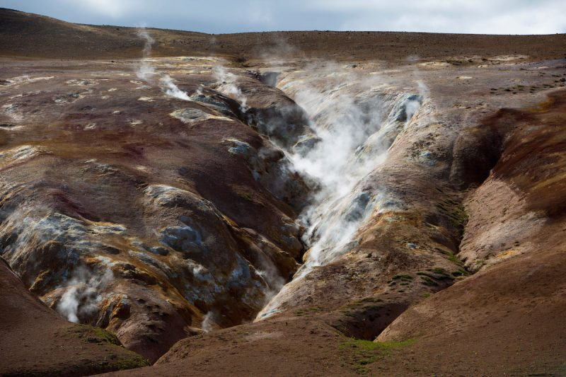
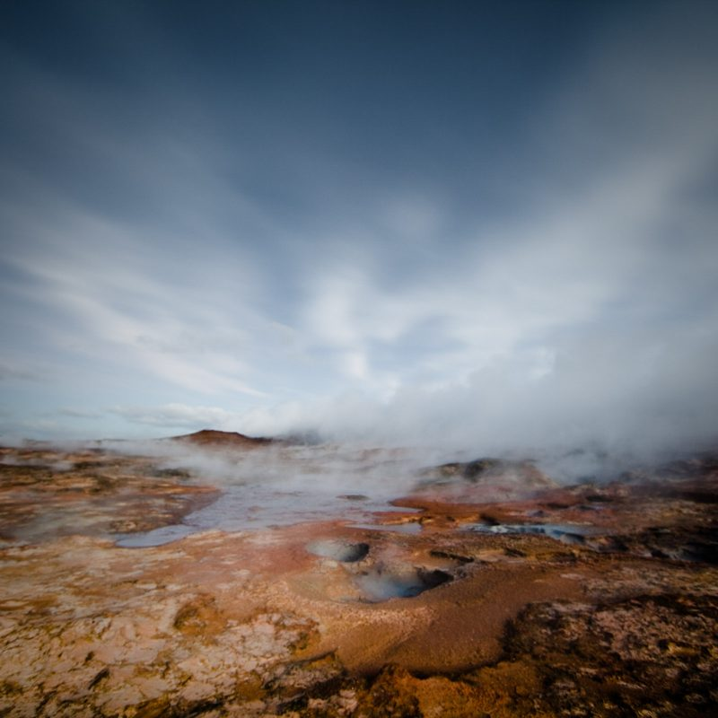
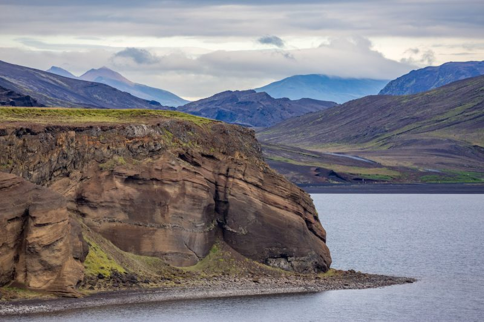
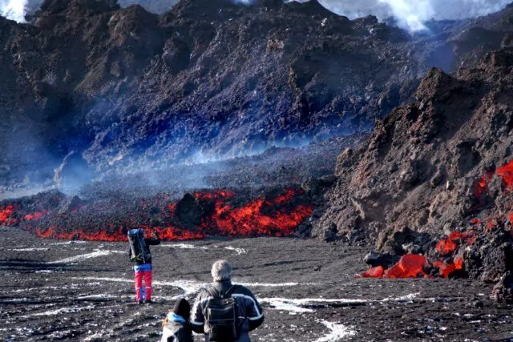
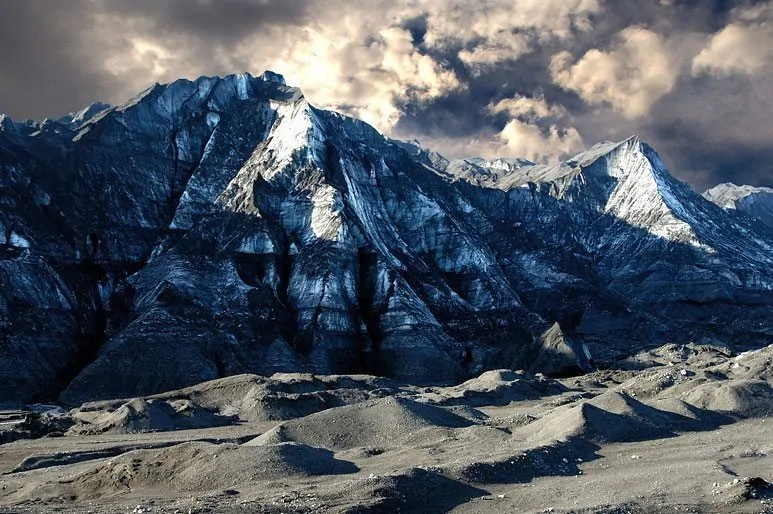
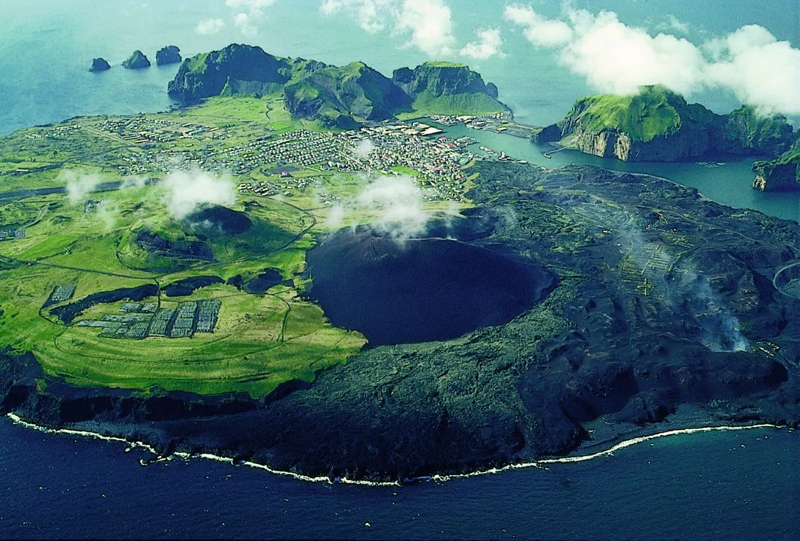
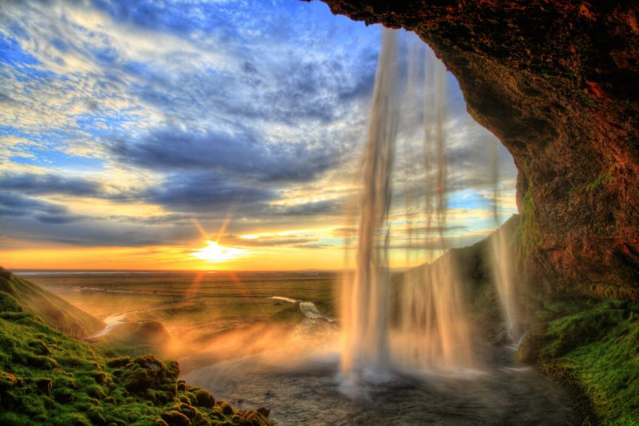
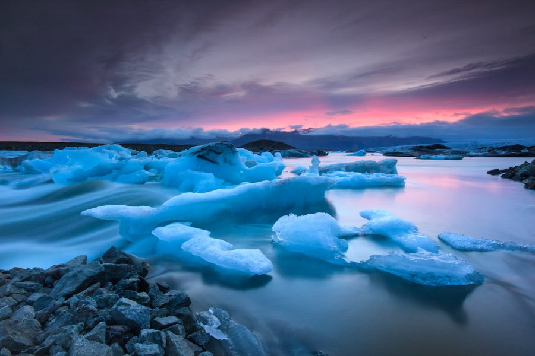

The land of Fire and Ice
I have fantasies of going to Iceland, never to return. -Edward Gorey-
Intro
Resting at the edge of the Arctic Circle, Iceland promises thrill-seeking adventures, dramatic landscapes and an abundance of highlights, waiting to be explored. Iceland is divided into 8 regions, each with their own must-visit highlights.
Earth
In Iceland, you can see the contours of the mountains wherever you go, and the swell of the hills, and always beyond that the horizon. And there’s this strange thing: you’re never sort of hidden; you always feel exposed in that landscape. But it makes it very beautiful as well. -Hannah Kent-
Stampahraun Lava Field
Located in the Southern Peninsula region of the island, the lava field lies 27 meters above sea level and guarantees amazing landscape photo shoots of the expansive black volcanic terrain
Gunnuhver Hot Springs
Located in the southwest part of the Reykjanes peninsula, Gunnuhver is a highly activated geothermal area of mud pools and steam vents. Collectively named after an angry female ghost, the hot springs’ eerie atmosphere is quite picturesque, capturing the steamy sky below the boiling sulfuric mud pools. The colorful minerals cooking in dangerous temperatures of over 300°C (570°F) in the ground create vibrant hues. The steam vents’ grandiose vapor clouds can be captured at various different angles yet be cautious with your step and stay within the designated trails.
Krísuvík Cliffs
Home to thousands of sea birds coming to mate, the birds nestle themselves within the cliffs beside the crashing Atlantic surf. This is a prime location for animal photography within your landscapes. Just a quick hike along the edge of the cliff and you will be able to spot a vast number of species depending on the season, including guillemots, auks, puffins, seagulls, European shags, sandpipers and peewits.
Fire
I felt the breath of the beast and heard the volcano stir inside the mountain. -unknonw-
Eyjafjallajökull
Let’s get the infamous out of the way first shall we? Eyjafjallajökull famously erupted in 2010, disrupting air travel all over the world. In fact the volcano is one of the most active in Iceland, erupting frequently ever since the last glacial period. The Eyjafjallajökull volcano is completely covered by an ice cap that covers an area of over 100 square kilometres. The volcano‘s activity level is listed as moderate but no activity has been detected since the 2010 eruption.
Katla
Another very active one, with twenty eruptions documented between 930 – 1918, although it hasn’t erupted violently in 100 years. Which must mean, you guessed it, that we’re due another one. Due to recent seismic activity, Katla is now on high alert. Katla is also one of the largest volcanoes in Iceland, bigger than its neighbour Eyjafjallajökull, and partially covered with ice. Katla is named after a folkloric figure, a housekeeper thought to be a witch. After murdering a worker who stole her pants she fled to the glacier and immediately caused a flood with her witchcraft.
Vestmannaeyjar – Eldfell
Eldfell is a volcanic cone that was formed in the surprise eruption in Vestmannaeyjar (Westman Islands) in 1973. The eruption began with no warning and would go on for five months, destroying around 400 homes on Heimaey Island and nearly causing its permanent evacuation. After the eruption islanders used the heat from the lava to provide hot water and generate electricity.
Water
It is life, I think, to watch the water. A men can learn so many things. -Nicholas Sparks-
Blue Lagoon

Less than an hour away from Reykjavík lies the famous blue lagoon, a geothermal spa in the middle of a lava field. One of the 25 wonders of the world, these crystal blue pools are full of mineral-rich water with high natural levels of mineral salts, silica, algae, the reason behind the lagoon’s picturesque blue. For the best photographic opportunities, wander outside on a path to get shots of the blue water against the green moss covered lava. Don’t miss out on its relaxing and rejuvenating qualities – go in for a dip!
Seljalandsfoss Waterfall
Fed by the melting water from the famed glacier-capped Eyjafjallajokull volcano, this majestic waterfall gracefully plummets 63 meters into the Seljalands River. You could spend hours hiking around the waterfall and photographing the sparkling white falls, surrounded by the emerald meadows. The most iconic photographs can be taken behind the curtain of the water, through a waking path in order to enjoy a truly unique viewpoint. It is the only known waterfall in the world that it is possible to walk behind. During the winter it is not permitted to walk behind the waterfall, however during the spring visitors will witness many different wildflowers blooming around the waterfall.
Jökulsárlón Glacier Lagoon
Said to be one of the greatest wonders of nature in Iceland, it is quite recent, as a result of the climate’s increasing temperatures. Located next to Vatnajökull, Europe’s largest glacier, the lagoon is characterized by ice, glacier tongues, rugged highlands and lava fields. As the glacier Breiðamerkurjökull adjusts to rising temps, ice chunks continually break off and float into a lagoon of melted ice. Each visit is unique as the lagoon is formed naturally and every year continues to get larger. A boat trip in the lagoon will allow you to get up-close photographs of the impressive glaciers, reflected on the crystal blue water.
Photos